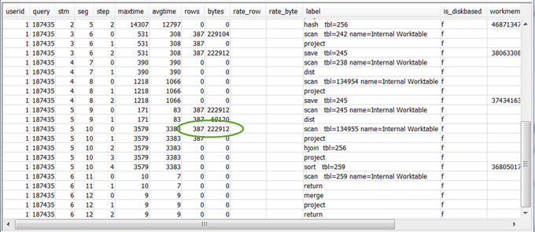

Le traduzioni sono generate tramite traduzione automatica. In caso di conflitto tra il contenuto di una traduzione e la versione originale in Inglese, quest'ultima prevarrà.
Utilizzo della visualizzazione SVL_QUERY_SUMMARY
Per analizzare le informazioni di riepilogo della query attraverso il flusso, esegui quanto segue:
-
Esegui la seguente query per determinare l'ID della tua query:
select query, elapsed, substring from svl_qlog order by query desc limit 5;Esamina il testo troncato della query nel campo
substringper determinare quale valorequeryrappresenta la tua query. Se hai eseguito la query più di una volta, utilizza il valorequerya partire dalla riga con il valoreelapsedpiù basso. Questa è la riga per la versione compilata. Se stai eseguendo molte query, puoi alzare il valore utilizzato dalla clausola LIMIT, che viene usata per accertarsi che la query sia inclusa. -
Seleziona le righe da SVL_QUERY_SUMMARY per la tua query. Ordina i risultati per flusso, segmento e fase:
select * from svl_query_summary where query = MyQueryID order by stm, seg, step;
-
Per mappare le fasi per le operazioni nel piano di query, consultare le informazioni contenute in Mappatura del piano di query sul riepilogo della query. Dovrebbero avere approssimativamente lo stesso valore per righe e byte (righe * larghezza del piano di query). Altrimenti, consultare Statistiche della tabella mancanti o scadute per le soluzioni consigliate.
-
Verifica che il campo
is_diskbasedabbia un valoret(true) per ogni fase. Hash, Aggregate e Sort sono gli operatori che, probabilmente, scriveranno dati al disco nel caso in cui il sistema non abbia abbastanza memoria allocata per l'elaborazione della query.Se
is_diskbasedha il valore "true", consultare Memoria insufficiente allocata alla query per le soluzioni consigliate. -
Rivedi il valore del campo
labele verifica se da qualche parte nelle fasi ci sia una sequenza AGG-DIST-AGG. La sua presenza indica l'aggregazione a due fasi, che è molto costosa. Per sistemarla, modifica la clausola GROUP BY per utilizzare la chiave di distribuzione (la prima chiave, nel caso in cui ce ne fossero più di una). -
Rivedi il valore
maxtimeper ogni segmento (è lo stesso all'interno di tutte le fasi nel segmento). Identifica il segmento con il valoremaxtimepiù alto e rivedi le fasi in questo segmento per i seguenti operatori.Nota
Un valore
maxtimealto non indica necessariamente che ci sia un problema con il segmento. Nonostante abbia un valore alto, il segmento potrebbe non aver impiegato molto tempo per essere elaborato. Tutti i segmenti in un flusso cominciano a programmarsi all'unisono. Tuttavia, è possibile che alcuni segmenti downstream non possano essere eseguiti finché non si ottengono dati da quelli upstream. Questo effetto fa sì che appaia abbiano impiegato più tempo, dato che il loro valoremaxtimeincluderà sia il tempo di attesa che quello di elaborazione.-
BCAST or DIST (BCAST o DIST): in questi casi, il valore
maxtimeelevato può derivare dalla redistribuzione di un gran numero di righe. Per le soluzioni consigliate, consultare Distribuzione dei dati non ottimale. -
HJOIN (hash join): se la fase in questione ha un valore molto elevato nel campo
rowsrispetto al valorerowsnella fase finale RETURN nella query, consultare Hash join per le soluzioni consigliate. -
SCAN/SORT: subito prima di una fase di combinazione, cerca una sequenza di fasi SCAN, SORT, SCAN, MERGE. Questo modello indica che i dati non ordinati sono stati scansionati e uniti all'area ordinata della tabella.
Verifica che il valore delle righe per la fase SCAN abbia un valore molto più alto rispetto a quello nella fase finale RETURN nella query. Questo modello indica che il motore di esecuzione sta scansionando le file che verranno eliminate, il che è inefficiente. Per le soluzioni consigliate, consultare Predicato poco restrittivo.
Se il valore
maxtimedella fase SCAN è alto, consultare Clausola WHERE non ottimale per le soluzioni consigliate.Se il valore
rowsdella fase SORT non è zero, consultare Righe non ordinate o ordinate in modo errato per le soluzioni consigliate.
-
-
Per avere un'idea del totale dei dati restituiti al client, rivedi i valori
rowsebytesdelle fasi 5–10 che precedono la fase finale RETURN. Questo processo può essere un po' un'arte.Ad esempio, nel seguente riepilogo di query, puoi constatare che la terza fase PROJECT fornisce un valore
rowsma non un valorebytes. Consultando le fasi precedenti per trovarne uno con lo stesso valorerows, troverai che la fase SCAN fornisce sia informazioni relative alle righe che ai byte:Se stai restituendo un grande volume insolito dei dati, consultare Insieme di risultati molto grande per le soluzioni consigliate.
-
Verifica se per ogni fase il valore
bytesè alto rispetto al valorerowsrispetto alle altre fasi. Questo modello può indicare che stai selezionando molte colonne. Per le soluzioni consigliate, consultare Elenco SELECT grande.